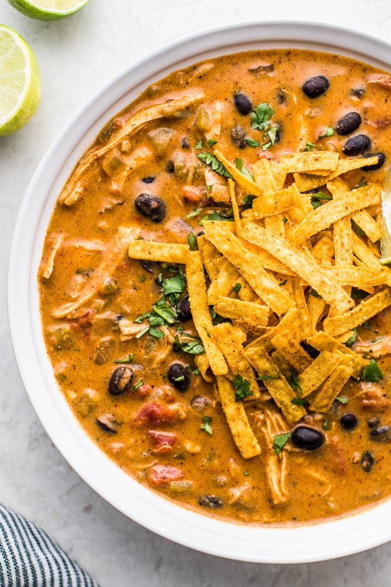

Soups

Enchilada Soup from Isabel Eats
Ingredients
- 3 tablespoons olive oil
- 1 medium onion, diced
- 1 jalapeno, seeds and stem removed (optional)
- 1 teaspoon minced garlic (about 2 cloves)
- 1/2 cup masa harina
- 3 cups chicken broth
- 2 1/4 cups red enchilada sauce (authentic version, easy 10-minute version, or 2 10-ounce cans)
- 3 cups cooked shredded chicken (about 1 1/2 pounds)
- 1 14-ounce can black beans, rinsed and drained
- 1 14-ounce can fire-roasted diced tomatoes
- 2 4-ounce cans green chiles
- 1 teaspoon salt, plus more to taste
- 4 ounces cream cheese
Clues
- Heat olive oil in a large Dutch oven or pot over medium-high heat. Add onions, jalapeno (if using) and garlic and saute for 5 minutes, until onions become translucent.
- Add masa harina and cook for 1 minute, stirring constantly.
- Add chicken broth, enchilada sauce, shredded chicken, black beans, diced tomatoes, green chiles and salt.
- Stir together to combine and cook for about 10 minutes, uncovered, until the soup begins to simmer. Make sure to stir the soup occasionally to make sure the masa harina gets fully distributed throughout the soup.
- Remove the Dutch oven or pot from the heat and add the cream cheese. Stir it into the soup until it completely dissolves and melts.
- Serve immediately with your favorite toppings and enjoy!
Back to Main